BRRRR — Buy, Rehab, Rent, Refinance, Repeat — is one of the more disciplined ways to scale a rental portfolio: buy a property below its stabilized value, force equity through renovation, lease it up at market rent, then do a cash-out refinance against the improved value to recycle capital into the next deal. It's a strategy that only works when the underlying property earns it. Our partnership's duplex on Bronson Ave in West Adams is a case where it did — and this time we can show you the whole arc in pictures.
Buy: why this property.
We closed at $1,010,000 on a building priced off its as-is rent roll. Two things made the deal beyond the numbers: the neighborhood, and the lot itself.
We've been bullish on West Adams for a while. It sits centrally between Downtown, the Westside, and Culver City, with Expo Line access, and it has absorbed roughly a decade of institutional investment — CIM Group alone controls close to 50 assets on the corridor, with hundreds of units delivered and a Museum of Ice Cream flagship opening nearby. The restaurant scene (Alta Adams, Cento Pasta Bar, Maydan Market) arrived before most institutional capital noticed. That's the kind of momentum that shows up in rent growth years before it shows up in headlines.
Then there's the lot. A corner lot with two street frontages is a different animal than a standard mid-block parcel — it gives independent access to a rear or side portion of the site. On 7,510 square feet, that's real ADU potential: one, possibly two additional units, added without touching the existing duplex or disturbing the tenants already living there. We haven't pulled that trigger yet, but it's the kind of optionality that makes a property worth more than its current rent roll suggests.
Rehab: the before and after.
One unit was occupied when we bought the building; the other was vacant, which let us renovate in sequence without displacing anyone. The scope ran inside and out — kitchens, baths, floors, systems, then the exterior: fresh stucco, new landscaping, and a facade that finally matches the bones. The "before" photos below are the property as we bought it; the "after" photos are the renovated units, virtually staged the way we present them to prospective tenants.
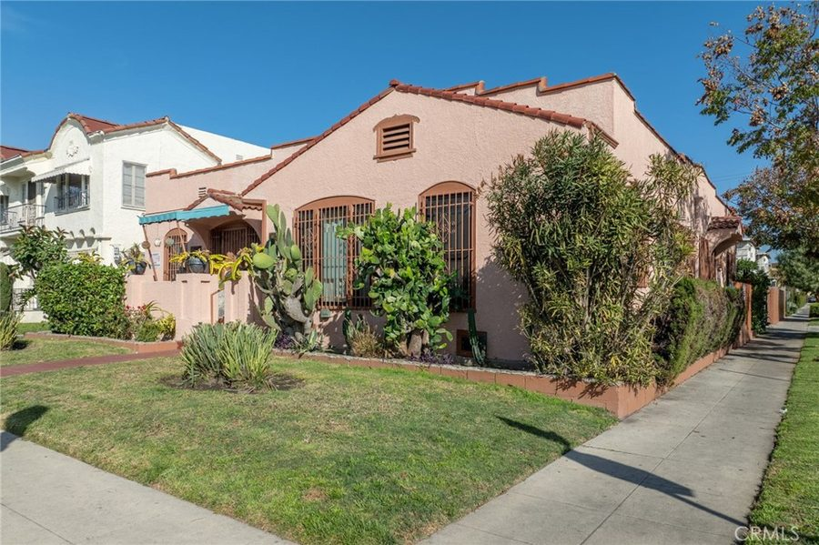
Before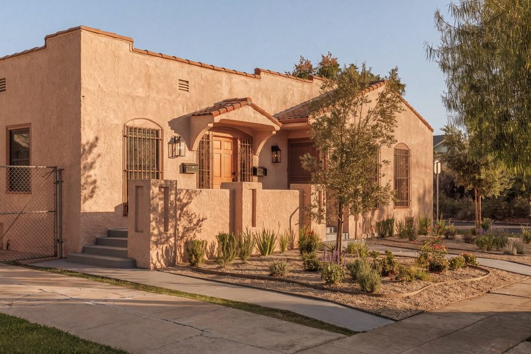
After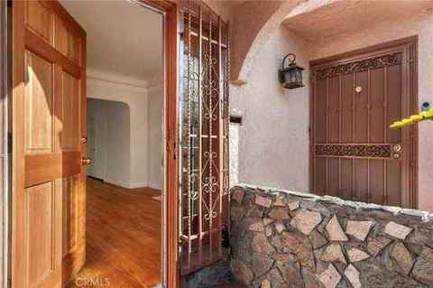
Before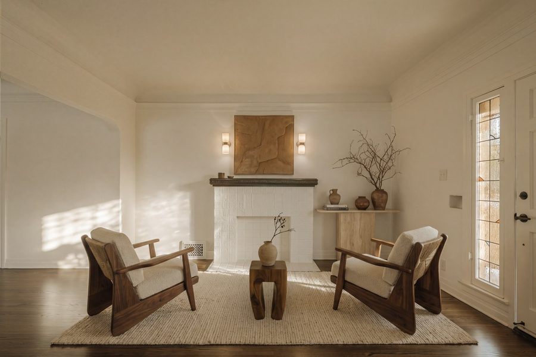
After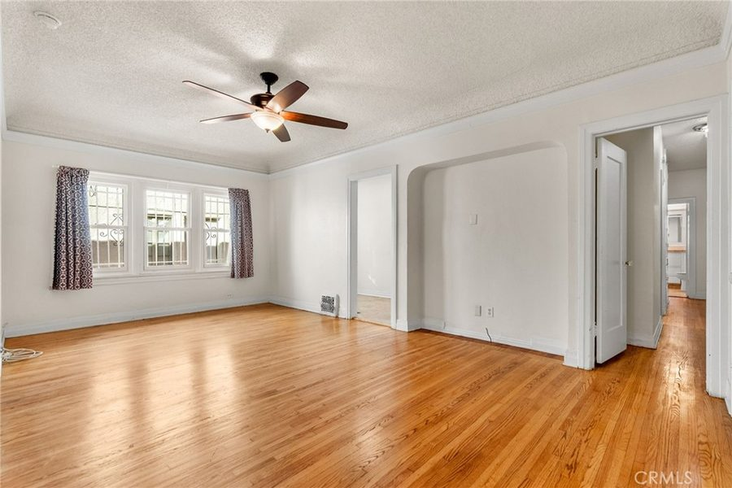
Before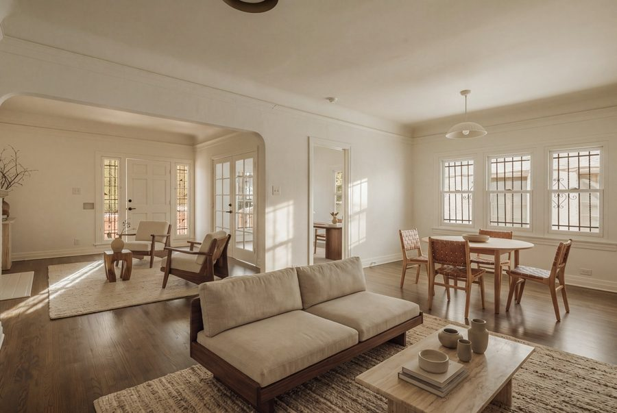
After Before
Before After
After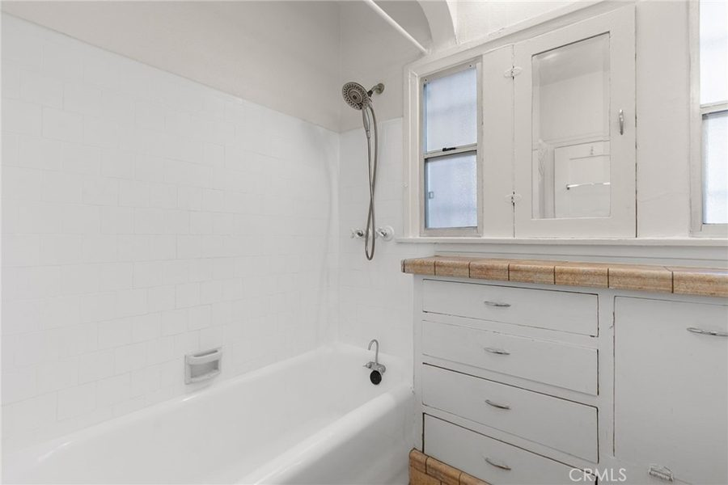
Before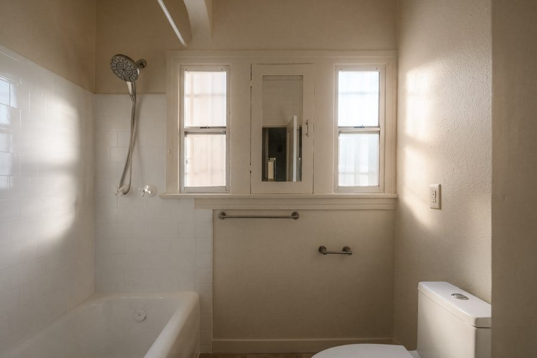
AfterSame rooms, same angles — that's the point. A renovation doesn't have to erase a 1925 building to modernize it. The arched openings, the fireplace, the light — all still there. What changed is everything a tenant touches: kitchens, baths, floors, fixtures, and an exterior that signals the building is cared for before anyone reaches the front door.
What's new: no "before" exists.
Not everything in the renovation was a refresh. We added a brand-new bathroom — teal zellige-style tile, a walk-in shower, and an arched mirror the 1925 floor plan never had. The rest of the scope carries the same intent: a dedicated side-by-side laundry, a den that works as a home office, and new garage doors on the second street frontage — the same frontage that makes the ADU play possible.
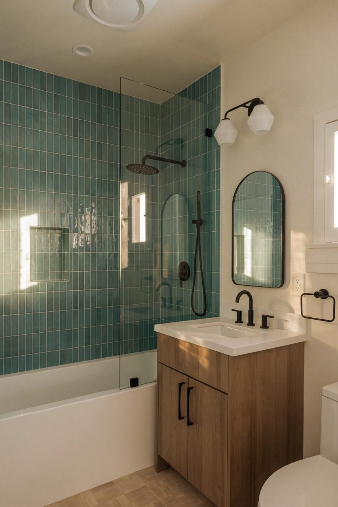
New Bath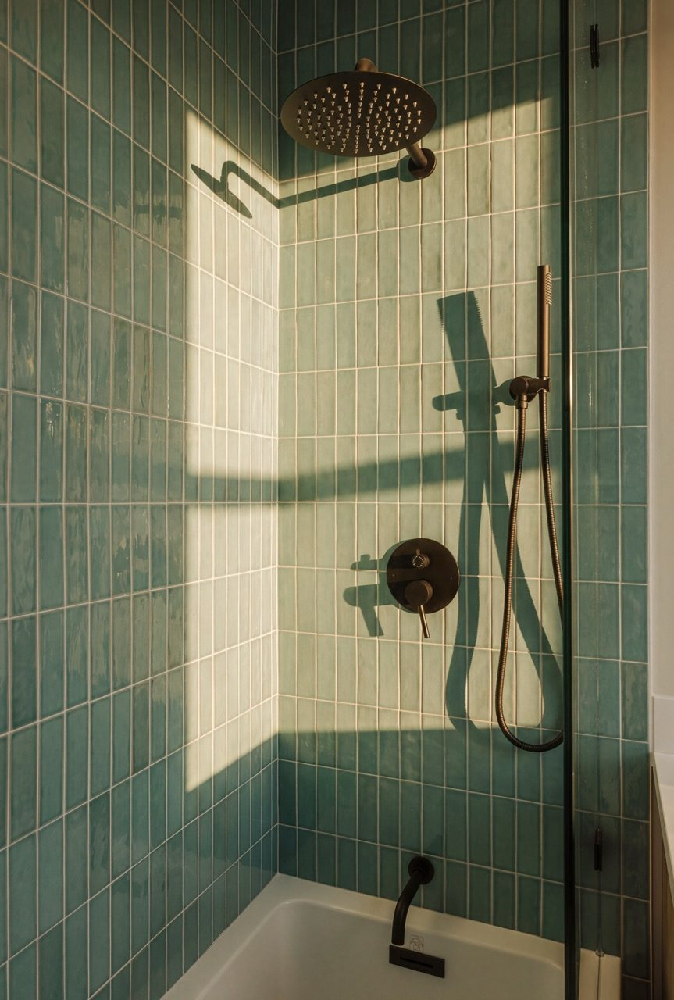
New Bath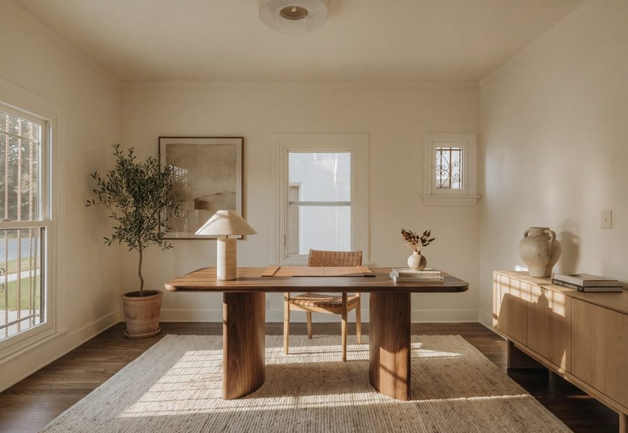
Den / Office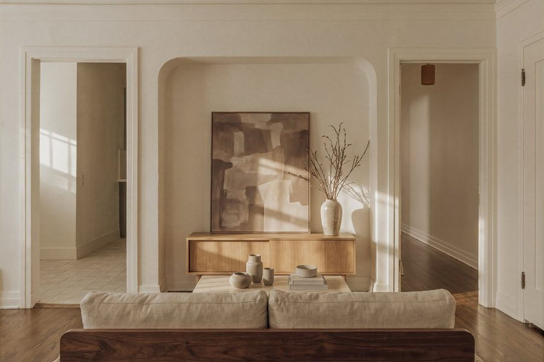
The Arches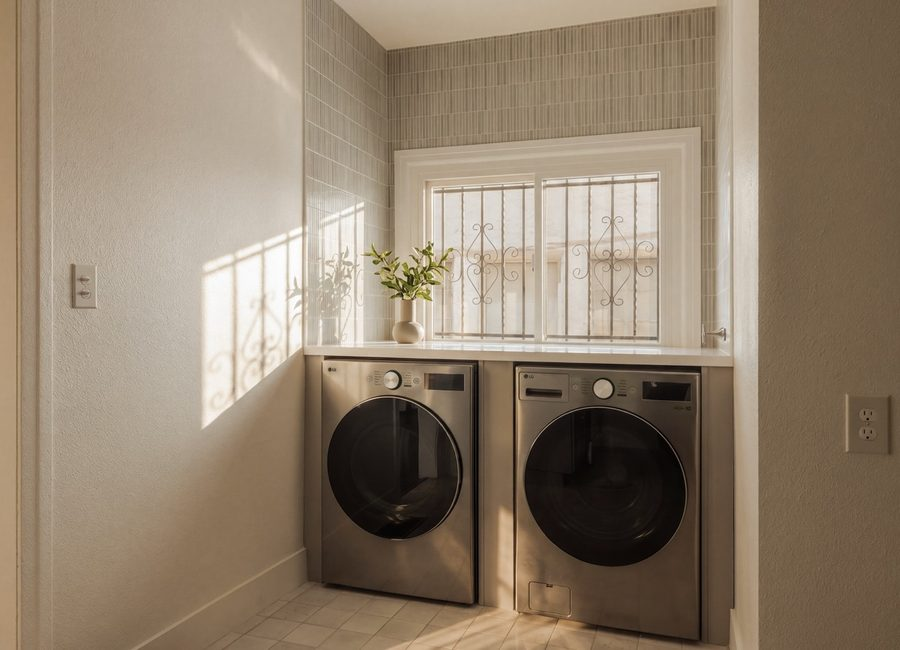
Laundry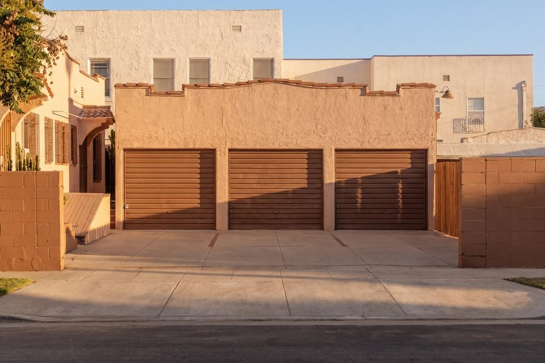
GaragesRent: what the market said back.
Once the work was done, we leased the units at market rent — meaningfully ahead of where the building was renting when we bought it. Staging did real work here too; it's easy to underestimate a room until you see it lived in.
Refinance: rent, cap rate, and value.
We're not going to publish exact rent figures — every deal is different, and the point isn't the specific number. The point is the mechanism: for income property, value is net operating income divided by market cap rate. Raise the rent a renovation supports, and that increase drops straight to net operating income. Hold the cap rate constant, and the property's value rises by a multiple of that rent increase — which is exactly the equity a BRRRR refinance is designed to capture.
The BRRRR loop, as we ran it
- Buy: a character duplex on a large corner lot, priced on its as-is rent roll.
- Rehab: renovate unit by unit, starting with the vacant one, without displacing existing tenants — then the exterior.
- Rent: re-lease both units at market rent once the work is done.
- Refinance: pull equity created by the higher rent roll and the resulting cap-rate value, at the improved valuation.
- Repeat: redeploy that capital into the next deal — with the ADU upside on this lot still on the table.
The lot told us this wasn't just a duplex — it was a duplex with a second act.
We're genuinely happy with how this one came together. It's a good building, in a neighborhood we believe in, with a rent roll that reflects the work we put in — and it isn't finished creating value yet. If the corner-lot ADU potential gets built out, this becomes a very different asset than the one we closed on.
Thinking about a BRRRR of your own?
We underwrite value-add and small multifamily deals across LA the same way — the property's story, then the numbers that make it real. Send us the address.
Talk to AMRE →